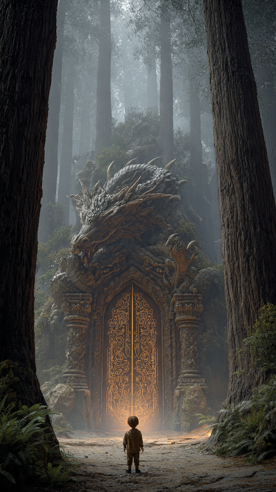
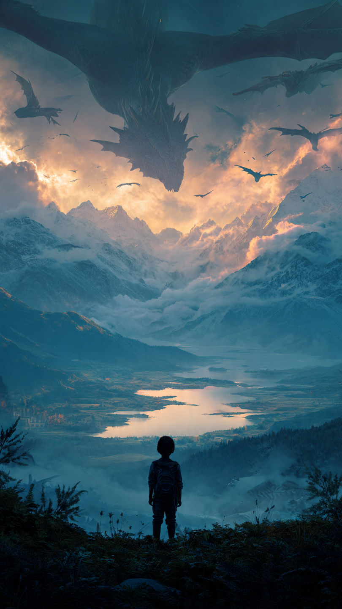

في قرية صغيرة تقع بين الجبال الكثيفة، كان يعيش طفل في الثانية عشرة من عمره يُدعى ياسين.
كان مختلفًا عن جميع الأطفال.
فبينما كانوا يقضون وقتهم في اللعب، كان هو يقضي ساعات طويلة يستكشف الغابات والأنهار، باحثًا عن أسرار لا يصدقها أحد.
وكان جده يروي له دائمًا قصة غريبة قبل النوم.
يقول فيها:
"في أعماق الغابة...
يوجد باب لا يراه إلا صاحب القلب الشجاع.
ومن يعبره...
لن يعود كما كان أبدًا."
كان الجميع يظنون أنها مجرد حكاية قديمة.
لكن ياسين لم يتوقف عن التفكير فيها.
وفي صباح يوم ضبابي، قرر أن يذهب إلى الغابة وحده.
حمل حقيبة صغيرة، ومصباحًا، وبعض الطعام، ثم بدأ رحلته بين الأشجار العملاقة.
كلما تقدم أكثر...
أصبحت الغابة أكثر هدوءًا.
حتى اختفت أصوات الطيور تمامًا.
وبينما كان يعبر جدولًا صغيرًا، لاحظ شيئًا غريبًا.
كان هناك قوس حجري ضخم مغطى بالنباتات، لم يره من قبل.
اقترب منه بحذر.
وفي منتصف القوس كانت توجد مرآة شفافة تلمع بلون أزرق.
لكنها لم تكن تعكس صورته.
بل كانت تعرض سماءً مليئة بجزر عائمة وتنانين ضخمة تحلق بينها.
مد ياسين يده نحو المرآة.
وفجأة...
تحولت إلى سطح يشبه الماء.
قبل أن يستطيع التراجع...
سحبته قوة غامضة إلى الداخل.
فتح عينيه ليجد نفسه في عالم لم يتخيل وجوده.
جبال تطفو في السماء.
أنهار تتدفق بين السحب.
وقلاع ضخمة مبنية فوق الصخور الطائرة.
لكن أكثر ما أدهشه...
كان عشرات التنانين التي تحلق بحرية في السماء.
صغيرة وكبيرة.
بألوان لم ير مثلها من قبل.
وبينما كان ينظر حوله بدهشة...
هبط أمامه تنين أزرق صغير.
اقترب منه ببطء.
ثم انحنى وكأنه يعرفه منذ زمن.
وفجأة ظهر على ذراع ياسين رمز ذهبي مضيء لم يكن موجودًا من قبل.
وفي نفس اللحظة...
تغيرت وجوه جميع التنانين.
ونظرت إليه وكأنها رأت شيئًا كانت تنتظره منذ مئات السنين.
ثم سمع صوتًا قويًا يهز السماء يقول:
"لقد عاد... حامل ختم التنانين."
📷 الصورة رقم 1

تراجع ياسين خطوة إلى الخلف وهو ينظر إلى الرمز الذهبي الذي ظهر على ذراعه.
كان يتوهج كلما اقترب منه التنين الأزرق.
وقبل أن ينطق بكلمة...
امتلأت السماء بأصوات أجنحة ضخمة.
هبطت عشرات التنانين حوله في دائرة واسعة.
لم يكن أيٌ منها ينظر إليه بعدائية.
بل كانت تنحني أمامه باحترام.
وفجأة شق السحب تنين أبيض عملاق، أكبر من جميع التنانين الأخرى.
كان ظهره مغطى بحراشف فضية تلمع كالألماس.
وعيناه بلون السماء الصافية.
هبط بهدوء أمام ياسين، ثم قال بصوت عميق:
"أنا أوريون... حارس مملكة التنانين."
"لقد انتظرنا عودتك منذ خمسمائة عام."
ارتبك ياسين وقال:
"لكنني لم آتِ إلى هنا من قبل!"
ابتسم أوريون وقال:
"أنت لم تأتِ...
لكن دماء أول حارس للتنانين تجري في عروقك."
ثم أخبره أن أحد أجداده أنقذ عالم التنانين قبل قرون، وأغلق بوابة الشر باستخدام ختم سحري.
ومنذ ذلك اليوم، اختفى نسل الحراس من هذا العالم...
حتى ظهر الختم مرة أخرى على ذراع ياسين.
أخذ أوريون ياسين إلى القلعة العائمة.
كانت أكبر مما تخيل.
جدرانها من البلور الأزرق.
وأبراجها تعانق الغيوم.
وفي ساحتها، كانت التنانين الصغيرة تتدرب على الطيران وإطلاق النيران تحت إشراف التنانين الأكبر.
شعر ياسين وكأنه يعيش حلمًا.
لكن الهدوء لم يدم طويلًا.
دوت صفارات الإنذار في أنحاء القلعة.
واكتست السماء باللون الأحمر.
دخل أحد الحراس وهو يلهث وقال:
"لقد عاد جيش الظلال!"
اقترب الجميع من شرفات القلعة.
وفي الأفق...
ظهرت آلاف المخلوقات السوداء تطير بين السحب.
وفي مقدمتها تنين هائل أسود اللون، عيناه حمراوان كالجمر.
كان يُعرف باسم:
"ملك الظلام... دراكور."
ضحك دراكور بصوت هز الجبال وقال:
"أخيرًا ظهر حامل الختم."
"سآخذ قوته...
وأحكم جميع العوالم إلى الأبد."
ثم أطلق كرة نار سوداء نحو القلعة.
لكن قبل أن تصل...
قفز التنين الأزرق الصغير أمام ياسين، وحماه بجناحيه.
وفي اللحظة نفسها...
اشتعل الختم الذهبي على ذراع ياسين بقوة.
وانطلق منه شعاع من الضوء اخترق السماء.
فتوقفت جميع التنانين عن القتال.
ونظر الجميع إليه بدهشة...
لأن الختم بدأ يتحول إلى شيء لم يره أحد منذ مئات السنين.
📷 الصورة رقم 2

اشتعل الختم الذهبي على ذراع ياسين حتى أصبح يضيء كالشمس.
وفجأة ارتفع في الهواء دون أن يشعر.
كانت التنانين تنظر إليه في صمت، بينما توقفت المعركة للحظات.
خرج من الختم شعاع من النور، ثم تحول إلى درع ذهبي وسيف مصنوع من ضوء نقي.
قال أوريون بصوت مليء بالدهشة:
"لقد اختارك الختم...
أصبحت الحارس الجديد لعالم التنانين."
زأر دراكور بغضب شديد.
ثم اندفع بسرعة هائلة نحو ياسين، ناشرًا ألسنة اللهب السوداء في السماء.
لكن قبل أن يصل إليه، حلقت جميع التنانين حول ياسين في دائرة واسعة.
الأحمر.
والأزرق.
والأخضر.
والذهبي.
وحتى أصغر التنانين وقفت إلى جانبه.
فقد كانوا يعلمون أن هذه المعركة ستحدد مصير عالمهم.
رفع ياسين السيف الذهبي.
ولم يشعر بالخوف.
بل شعر بقوة غريبة تسري في جسده.
ثم انطلق مع أوريون نحو دراكور.
بدأت معركة هائلة بين الغيوم.
لهب أحمر يصطدم بلهب أسود.
تنانين عملاقة تناور بين الجبال الطائرة.
وبرق ذهبي يشق السماء.
استمرت المعركة طويلًا.
وفي لحظة حاسمة، تمكن دراكور من إسقاط سيف ياسين.
وظن الجميع أن النهاية قد اقتربت.
لكن التنين الأزرق الصغير، الذي كان أول من استقبل ياسين، اندفع بشجاعة وأعاد إليه السيف.
ابتسم ياسين.
وأمسك بالسيف بكلتا يديه.
ثم وجّه الختم نحو السماء.
انطلقت آلاف الخيوط الذهبية من السحب.
واجتمعت حول دراكور.
لم تكن لتؤذيه...
بل لتسحب الظلام الذي سيطر على قلبه منذ قرون.
بدأ لون حراشفه يتغير ببطء.
من الأسود الداكن...
إلى الأزرق العميق.
ثم سقط على الأرض منهكًا.
واختفت النار السوداء من عينيه.
قال دراكور بصوت ضعيف:
"لم أكن شريرًا دائمًا...
لقد خدعتني قوة الظلام."
ثم أغمض عينيه، واختفى الظلام الذي كان يهدد المملكة.
عاد الضوء إلى السماء.
وعادت الجزر الطائرة لتلمع بألوانها الجميلة.
وأطلقت جميع التنانين زئيرًا واحدًا احتفالًا بالنصر.
فتح أوريون بوابة العودة إلى عالم البشر.
وقال لياسين:
"ستبقى دائمًا صديقًا للتنانين."
"وعندما يحتاج هذا العالم إليك...
سيظهر الختم من جديد."
ابتسم ياسين وعبر البوابة.
وعندما عاد إلى الغابة، لم تمر سوى دقائق قليلة.
لكن كل ليلة...
كان يرى تنينًا أزرق يحلق فوق منزله.
فيبتسم، ويعرف أن عالم التنانين ما زال بخير...
وأن المغامرة ربما لم تنتهِ بعد.